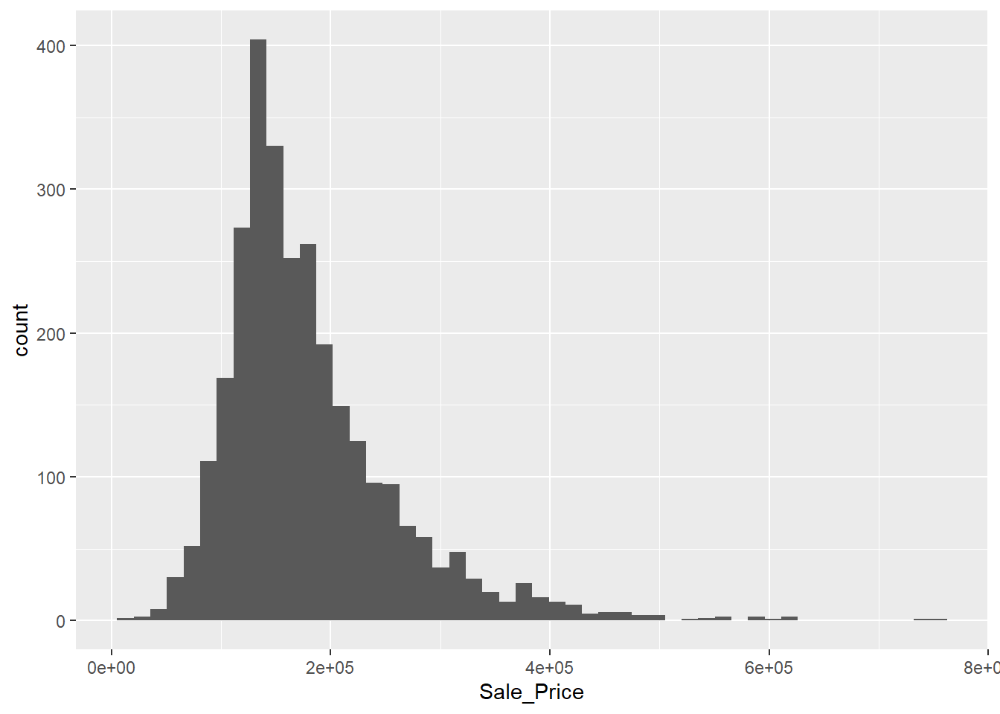
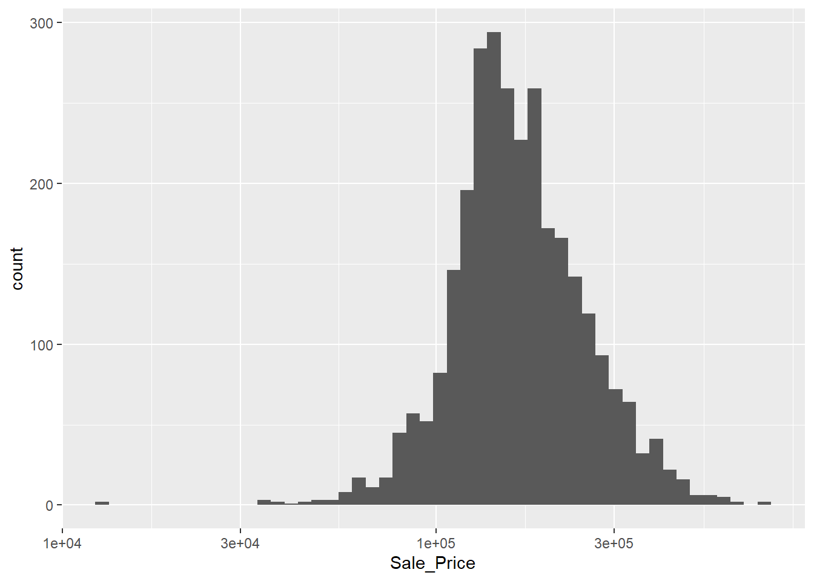

Code
data(ames, package = "modeldata")
dim(ames)[1] 2930 74Code along with the Tidy Modeling with R book by Max Kuhn and Julia Silge.
2,930 properties in Ames, Iowa.
data(ames, package = "modeldata")
dim(ames)[1] 2930 7474 columns covering house characteristics, locations, lot info, ratings, and sales prices.
library(tidymodels)
tidymodels_prefer()ggplot(ames, aes(x = Sale_Price)) +
geom_histogram(bins = 50)
Right skewed distribution. Let’s log transform it.
ggplot(ames, aes(x = Sale_Price)) +
geom_histogram(bins = 50) +
scale_x_log10()
More normal, better for inference.
ames <- ames |>
mutate(Sale_Price = log10(Sale_Price))Using log10 sale price from here on out.
set.seed(501)ames_split <- initial_split(ames, prop = 0.8)
ames_split<Training/Testing/Total>
<2344/586/2930>ames_train <- training(ames_split)
ames_test <- testing(ames_split)
dim(ames_train)[1] 2344 74There are 2344 and 586 houses in the training and test sets. respectively.
ames_split <- initial_split(ames, prop = 0.8, strata = Sale_Price)
ames_train <- training(ames_split)
ames_test <- testing(ames_split)Stratified the split on Sale_Price since right skewed. Ensure similar distributions in training and test sets.
lm_model <- linear_reg() |>
set_engine("lm")
lm_form_fit <- lm_model |>
fit(Sale_Price ~ Longitude + Latitude, data = ames_train)
lm_xy_fit <- lm_model |>
fit_xy(
x = ames_train |> select(Longitude, Latitude),
y = ames_train |> pull(Sale_Price)
)
lm_form_fitparsnip model object
Call:
stats::lm(formula = Sale_Price ~ Longitude + Latitude, data = data)
Coefficients:
(Intercept) Longitude Latitude
-312.351 -2.037 3.018 lm_xy_fitparsnip model object
Call:
stats::lm(formula = ..y ~ ., data = data)
Coefficients:
(Intercept) Longitude Latitude
-312.351 -2.037 3.018 2 different ways to fit the same model: using a formula interface and using x/y interface.
tidy(lm_form_fit)# A tibble: 3 × 5
term estimate std.error statistic p.value
<chr> <dbl> <dbl> <dbl> <dbl>
1 (Intercept) -312. 14.3 -21.9 5.64e-97
2 Longitude -2.04 0.128 -15.9 4.07e-54
3 Latitude 3.02 0.180 16.8 1.00e-59tidy() in place of summary() for tidy results.
ames_test_small <- ames_test |> slice(1:5)
predict(lm_form_fit, new_data = ames_test_small)# A tibble: 5 × 1
.pred
<dbl>
1 5.23
2 5.23
3 5.22
4 5.29
5 5.28Predicting on a subset of the test data.
ames_test_small |>
select(Sale_Price) |>
bind_cols(predict(lm_form_fit, new_data = ames_test_small)) |>
bind_cols(predict(lm_form_fit, ames_test_small, type = "pred_int"))# A tibble: 5 × 4
Sale_Price .pred .pred_lower .pred_upper
<dbl> <dbl> <dbl> <dbl>
1 5.33 5.23 4.92 5.55
2 5.02 5.23 4.91 5.54
3 5.39 5.22 4.90 5.53
4 5.28 5.29 4.98 5.61
5 5.28 5.28 4.97 5.59Binding predictions and prediction intervals to the actual sale prices.
tree_model <-
decision_tree(min_n = 2) %>%
set_engine("rpart") %>%
set_mode("regression")
tree_fit <-
tree_model %>%
fit(Sale_Price ~ Longitude + Latitude, data = ames_train)
ames_test_small %>%
select(Sale_Price) %>%
bind_cols(predict(tree_fit, ames_test_small))# A tibble: 5 × 2
Sale_Price .pred
<dbl> <dbl>
1 5.33 5.18
2 5.02 5.18
3 5.39 5.18
4 5.28 5.31
5 5.28 5.31Example of using a decision tree model instead of linear regression.
parsnip can support a lot more models (see).
Can use parsnip_addin() in RStudio to view list of poissible models for each model mode. Unfortunately however, Positron does not currently support RStudio addins.
Workflows help bundle pre-processing, fit, and post-proc steps.
lm_model <- linear_reg() |>
set_engine("lm")
lm_wflow <- workflow() |>
add_model(lm_model) |>
add_formula(Sale_Price ~ Longitude + Latitude)Adding model and pre-processing (formula) to the workflow.
lm_fit <- fit(lm_wflow, ames_train)
lm_fit══ Workflow [trained] ══════════════════════════════════════════════════════════
Preprocessor: Formula
Model: linear_reg()
── Preprocessor ────────────────────────────────────────────────────────────────
Sale_Price ~ Longitude + Latitude
── Model ───────────────────────────────────────────────────────────────────────
Call:
stats::lm(formula = ..y ~ ., data = data)
Coefficients:
(Intercept) Longitude Latitude
-312.351 -2.037 3.018 Workflows have a fit() method that cas be used to fit the model.
predict(lm_fit, ames_test |> slice(1:5))# A tibble: 5 × 1
.pred
<dbl>
1 5.23
2 5.23
3 5.22
4 5.29
5 5.28Can also use predict() method on the fitted workflow.
lm_fit |> update_formula(Sale_Price ~ Longitude)══ Workflow ════════════════════════════════════════════════════════════════════
Preprocessor: Formula
Model: linear_reg()
── Preprocessor ────────────────────────────────────────────────────────────────
Sale_Price ~ Longitude
── Model ───────────────────────────────────────────────────────────────────────
Linear Regression Model Specification (regression)
Computational engine: lm Can update the workflow to change the formula or model.
lm_wflow <- lm_wflow |>
remove_formula() |>
add_variables(outcomes = Sale_Price, predictors = c(Longitude, Latitude))
lm_wflow══ Workflow ════════════════════════════════════════════════════════════════════
Preprocessor: Variables
Model: linear_reg()
── Preprocessor ────────────────────────────────────────────────────────────────
Outcomes: Sale_Price
Predictors: c(Longitude, Latitude)
── Model ───────────────────────────────────────────────────────────────────────
Linear Regression Model Specification (regression)
Computational engine: lm Can also add variables instead of a formula. Works w/ dplyr grammar. Facilitates more complex moedeling specs. Particularly useful w/ models such as glmnet and xgboost which expect user to make indicator vars from factor preds.
# install.packages("multilevelmod")
library(multilevelmod)
multilevel_spec <- linear_reg() %>% set_engine("lmer")
multilevel_workflow <-
workflow() %>%
# Pass the data along as-is:
add_variables(outcome = distance, predictors = c(Sex, age, Subject)) %>%
add_model(
multilevel_spec,
# This formula is given to the model
formula = distance ~ Sex + (age | Subject)
)
multilevel_fit <- fit(multilevel_workflow, data = Orthodont)
multilevel_fitStandard R methods can’t properly process this formula. Workflows handles by using optional suplementary model forumla argument in add_model(). add_variable() specifies bare col names; add_model() takes the actual formula given to the model.
# install.packages("censored")
library(censored)Loading required package: survivalparametric_spec <- survival_reg()
parametric_workflow <-
workflow() %>%
add_variables(outcome = c(fustat, futime), predictors = c(age, rx)) %>%
add_model(parametric_spec, formula = Surv(futime, fustat) ~ age + strata(rx))
parametric_fit <- fit(parametric_workflow, data = ovarian)
parametric_fit══ Workflow [trained] ══════════════════════════════════════════════════════════
Preprocessor: Variables
Model: survival_reg()
── Preprocessor ────────────────────────────────────────────────────────────────
Outcomes: c(fustat, futime)
Predictors: c(age, rx)
── Model ───────────────────────────────────────────────────────────────────────
Call:
survival::survreg(formula = Surv(futime, fustat) ~ age + strata(rx),
data = data, model = TRUE)
Coefficients:
(Intercept) age
12.8734120 -0.1033569
Scale:
rx=1 rx=2
0.7695509 0.4703602
Loglik(model)= -89.4 Loglik(intercept only)= -97.1
Chisq= 15.36 on 1 degrees of freedom, p= 8.88e-05
n= 26 Another example using a survival analysis model.
library(workflowsets)
location <- list(
longitude = Sale_Price ~ Longitude,
latitude = Sale_Price ~ Latitude,
coords = Sale_Price ~ Longitude + Latitude,
neighborhood = Sale_Price ~ Neighborhood
)
location_models <-
workflow_set(
preproc = location,
models = list(lm = lm_model)
)
location_models# A workflow set/tibble: 4 × 4
wflow_id info option result
<chr> <list> <list> <list>
1 longitude_lm <tibble [1 × 4]> <opts[0]> <list [0]>
2 latitude_lm <tibble [1 × 4]> <opts[0]> <list [0]>
3 coords_lm <tibble [1 × 4]> <opts[0]> <list [0]>
4 neighborhood_lm <tibble [1 × 4]> <opts[0]> <list [0]>location_models$info[[1]]# A tibble: 1 × 4
workflow preproc model comment
<list> <chr> <chr> <chr>
1 <workflow> formula linear_reg "" extract_workflow(location_models, id = "coords_lm")══ Workflow ════════════════════════════════════════════════════════════════════
Preprocessor: Formula
Model: linear_reg()
── Preprocessor ────────────────────────────────────────────────────────────────
Sale_Price ~ Longitude + Latitude
── Model ───────────────────────────────────────────────────────────────────────
Linear Regression Model Specification (regression)
Computational engine: lm workflowsets package to create a set of workflows to compare different pre-processing and model combinations. Useful for finding best predictive models or assessing predictors.
location_models <- location_models |>
mutate(fit = map(info, ~ fit(.x$workflow[[1]], ames_train)))
location_models# A workflow set/tibble: 4 × 5
wflow_id info option result fit
<chr> <list> <list> <list> <list>
1 longitude_lm <tibble [1 × 4]> <opts[0]> <list [0]> <workflow>
2 latitude_lm <tibble [1 × 4]> <opts[0]> <list [0]> <workflow>
3 coords_lm <tibble [1 × 4]> <opts[0]> <list [0]> <workflow>
4 neighborhood_lm <tibble [1 × 4]> <opts[0]> <list [0]> <workflow>location_models$fit[[1]]══ Workflow [trained] ══════════════════════════════════════════════════════════
Preprocessor: Formula
Model: linear_reg()
── Preprocessor ────────────────────────────────────────────────────────────────
Sale_Price ~ Longitude
── Model ───────────────────────────────────────────────────────────────────────
Call:
stats::lm(formula = ..y ~ ., data = data)
Coefficients:
(Intercept) Longitude
-183.226 -2.012 Iterating info column to fit each workflow and mutating onto existing tibble for tidyness.
final_lm_res <- last_fit(lm_wflow, ames_split)
final_lm_res# Resampling results
# Manual resampling
# A tibble: 1 × 6
splits id .metrics .notes .predictions .workflow
<list> <chr> <list> <list> <list> <list>
1 <split [2342/588]> train/test split <tibble> <tibble> <tibble> <workflow>fitted_lm_wflow <- extract_workflow(final_lm_res)
collect_metrics(final_lm_res)# A tibble: 2 × 4
.metric .estimator .estimate .config
<chr> <chr> <dbl> <chr>
1 rmse standard 0.166 pre0_mod0_post0
2 rsq standard 0.126 pre0_mod0_post0collect_predictions(final_lm_res) %>% slice(1:5)# A tibble: 5 × 5
.pred id Sale_Price .row .config
<dbl> <chr> <dbl> <int> <chr>
1 5.23 train/test split 5.33 1 pre0_mod0_post0
2 5.23 train/test split 5.02 2 pre0_mod0_post0
3 5.22 train/test split 5.39 4 pre0_mod0_post0
4 5.29 train/test split 5.28 5 pre0_mod0_post0
5 5.28 train/test split 5.28 8 pre0_mod0_post0last_fit() convenience function to fit final model to entire training set and evaluate on the test set in one step. Returns a tibble with the fitted workflow, metrics, and predictions. Each have helper functions to extract/collect them.